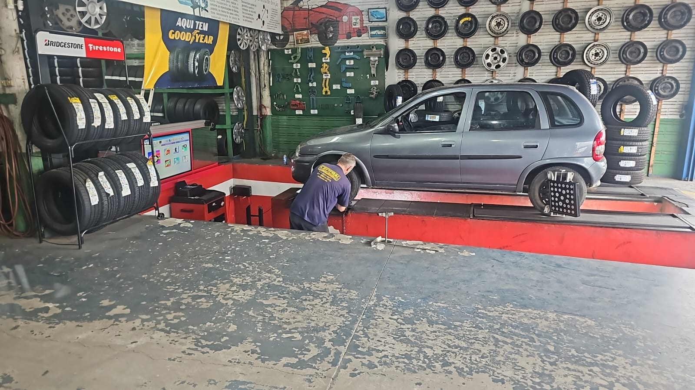

Peças automotivas
Consulte disponibilidade para o seu veículo.
Entre em contato com a Central Auto Center para explicar o que seu carro precisa e confirmar o atendimento.
Informações públicas — confirme o serviço por telefone.
Segunda a sábado, 08:00–18:30
Ver contato →Os serviços abaixo são exemplos comuns da categoria. Confirme diretamente com a oficina a disponibilidade para o seu veículo.
Consulte disponibilidade para o seu veículo.
Atendimento para manutenção automotiva.
Avaliação inicial antes do serviço.
Orientação para a necessidade do seu carro.

Foto pública do estabelecimentoA Central Auto Center aparece em cadastros públicos como peças e serviços automotivos. Para evitar informações incorretas, detalhes específicos de serviços e valores devem ser confirmados diretamente com a equipe.
Ligue e explique o que está acontecendo com o veículo.
Consulte disponibilidade, prazo e orientações da equipe.
Use a rota do Maps para chegar ao endereço informado.
Use os botões abaixo para ligar ou abrir a rota até a Central Auto Center.